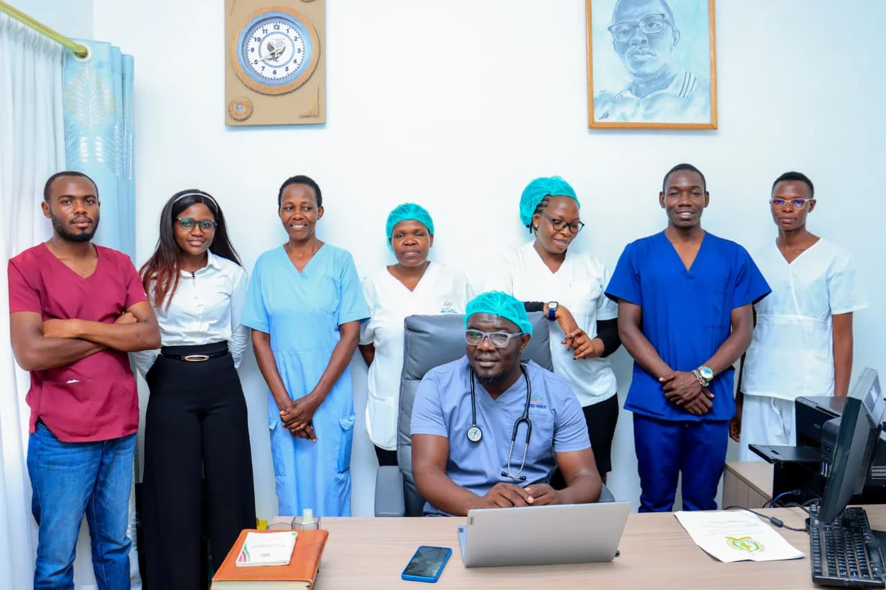

To be a trusted healthcare provider in Kisumu and beyond, supporting a healthy and empowered community through accessible, quality and compassionate medical services.
About the centre
About Gifted Minds Medical Centre
Gifted Minds Medical Centre is a private health facility in Kisumu Central Sub-County, established in 2019.

Gifted Minds Medical Centre · Kisumu
History
The centre’s history
Gifted Minds Medical Centre opened in 2019 as a Level 2 outpatient facility, providing primary healthcare in Kisumu County.
The centre later expanded to Level 3B. The facility profile lists inpatient and outpatient services, 20 beds, a registered Class C laboratory, a pharmacy, minor procedures, palliative care and home-based care.
It is located in Kisumu Central Sub-County, Kisumu County, Kenya.
View facilitiesPurpose
Vision and mission
The vision and mission below are taken from the facility profile.
To deliver reliable, patient-centred healthcare with professional and compassionate care provided by qualified staff.
What guides our care
Our values
The facility profile identifies these as the centre’s core values.
01Compassion and care
02Quality service
03Inclusivity
04Integrity and accessibility
05Professionalism and accountability
Quality and oversight
Registration and quality assurance
The facility profile identifies the Kenya Medical Practitioners and Dentists Council as the registration and licensing authority and the Ministry of Health Kenya as the oversight body. It also lists relevant professional councils.
Quality measures listed in the profile include treatment guidelines, infection prevention and control, clinical audits, continuing education, patient feedback, electronic records and confidentiality practices.
Quality practices named in the profile
- Standard Treatment Guidelines
- Infection Prevention and Control
- Clinical audits and mortality reviews
- Continuous Medical Education
- Patient satisfaction feedback
- Electronic health records and data protection
- Patient confidentiality
These practices are listed in the facility profile.
History
2019
The centre began as an outpatient facility and later added inpatient care.
The facility profile describes a private centre managed by a Director and an appointed Hospital Management Board. It also lists a Hospital Management System for service and records management.
View services